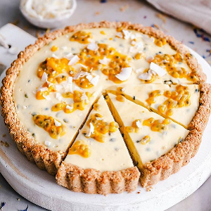

Ingredients
For the crust:
- 1/2 cup raw almonds
- 1/2 cup raw cashews
- 1/2 cup shredded coconut
- 1/2 cup oats
- 1/4 tsp of sea salt
- 2 tbsp of coconut oil
- 3 tbsp of maple syrup
- 1 tbsp of cold water
For the filling:
- 1 cup (240ml) of full fat coconut milk, canned
- Seeds and juice from 4-5 passion fruits (depending on size)
- 2 tbsp corn starch
- 1/4 cup maple syrup
- 2 tbsp of thick coconut yoghurt OR vegan cream cheese
- 1/2 tsp of agar agar
Instructions
- Add almonds, cashews, coconut, oats and salt to a food processor.
- Blitz until rough flour consistency.
- While still blending, slowly add coconut oil, maple syrup and water.
- Transfer the dough into lightly greased 20cm tart pan with removable bottom, form the crust by
pressing with your fingers.
- Bake at 175C/350F for 12 minutes, then leave to cool on a cooling rack.
- Blend milk and passion fruit flesh and passing it through a sieve.
- Add coconut milk, passion fruit flesh, corn starch and maple syrup to a saucepan.
- Whisk well and bring to a simmer.
- Cook gently for about 5 minutes, whisking continously, until the mixture is thick and creamy.
- Remove from heat and whisk in 2 tbsp of thick coconut yoghurt or cream cheese.
- Pour the filling into the crust, let cool to room temperature.
- Refrigerate for 6 hours or overnight.
- Decorate with passion fruit and enjoy!
Source Here